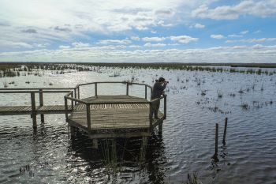
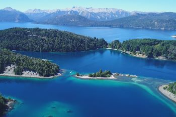
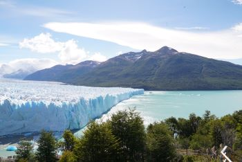
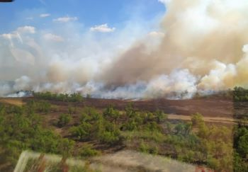
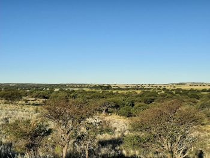
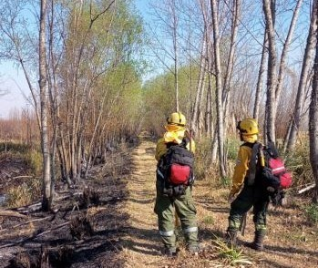

Parks and Protection
Inicio
Parques
Actividades
Noticias
Contacto
Noticias

24 de Agosto: Día Internacional de Parques Nacionales

Cuántos parques nacionales hay en Argentina y cuáles son

260mil personas recorren nuestros parques nacionales en el receso invernal

Parques Nacionales denuncia las quemas en Las Islas del Delta

Incendio en Parque los pantanos se encuentra contenido

Avanza la creación del Parque Nacional Cardenal